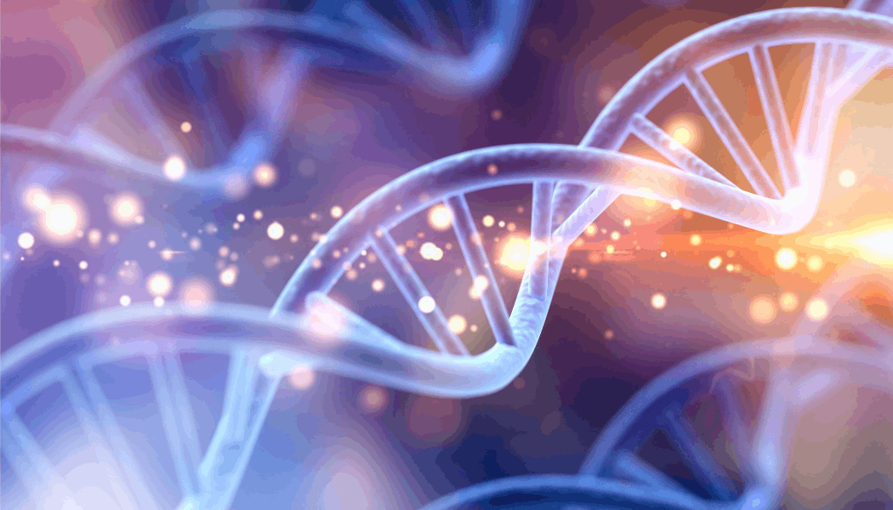
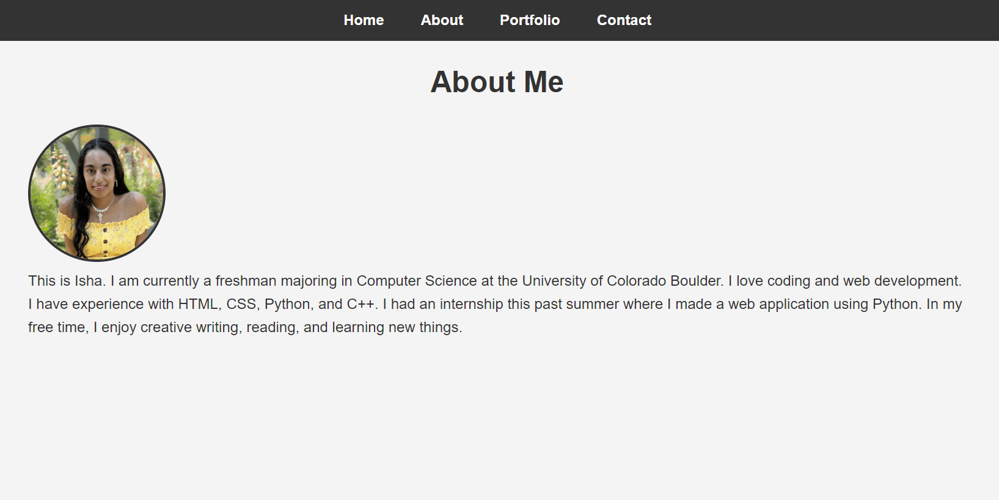
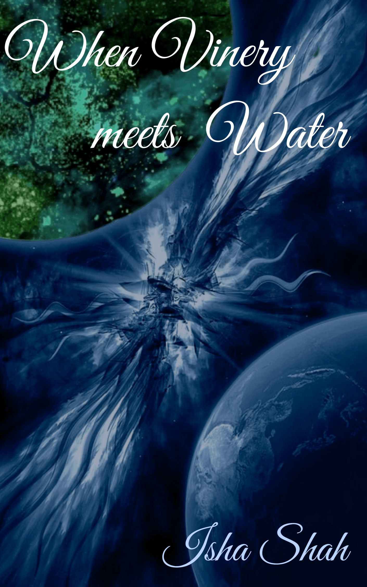

My Projects
Some of the projects I have worked on include my final project for CSCI 1300, a personal website I made for a club, and a book I wrote. These projects have allowed me to apply my skills in programming, web development, and writing to create something tangible.
My Favorite Projects
Journey Through the Genome

The final project for CSCI 1300 was to create a game using C++. It was like Candy Land, but with more elements. It was genome-themed and each colored square had a different outcome. There were tasks or riddles associated with each tile, and you would move on if you completed the task. There was an easy path and a hard path which the player could choose from. The winner was based on who had the most points at the end of the game.
Personal Website

One of the projects that I worked on for Women in Computing was to create a personal website. I created a website similar to this one, but it is not up to date with everything. It was a great way to apply my web development skills and create a space to showcase my work. This website is now a more up-to-date version of that project.
When Vinery meets Water

This is one of the projects that isn't related to programming, but still deserves to be mentioned. I wrote a fantasy/sci-fi book called When Vinery meets Water.
It was the first book I wrote and it was a great entry point into creative writing. I am currently working on the third draft and am also writing the second book in the trilogy.
Synopsis:
Two best friends, Jenna and Sofia, embark on a mysterious mission after receiving a series of unexpected letters.
But for Jenna, the journey is more than just a quest to find an ancient artifact; it's a chance to discover who she is again.